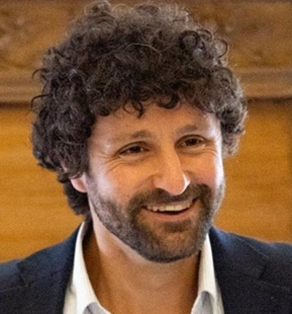
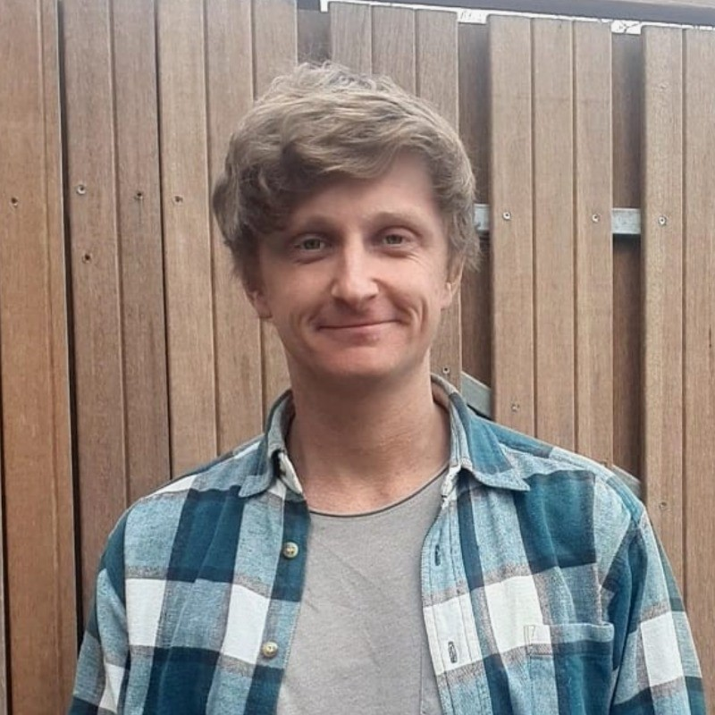

Roozenbeek Colloquium
The talk
Since the COVID-19 pandemic, trust in public institutions has steadily eroded, while misinformation has spread rapidly across media and online platforms.
Traditionally, science and governmental health organizations served as central pillars of public health communication and societal trust. Today, however, that foundation appears increasingly fragile.
At the same time, many countries are facing troubling public health trends, including declining vaccine uptake and growing skepticism toward scientific and medical expertise. This has sparked an important debate: is misinformation itself the primary driver of these developments, or are deeper societal shifts such as political polarization and declining institutional trust the real underlying causes? These are the questions Thom will take up, addressing the complex relationship between misinformation, trust and public health behaviors, with a focus on vaccine hesitancy.
In response to these challenges, researchers have developed and tested a range of interventions aimed at countering misinformation and boosting vaccination uptake. These interventions exist either at the individual level (where individuals are expected to learn something, update their beliefs, or change their behaviour) or at the system level (for example, making changes to the systems we use to communicate information). Jon will review these intervention strategies and how well they work, as well as pathways for improving their effectiveness in real-world settings. He will focus on one particular and novel intervention type: making misinformation and misleading content expensive to produce and spread. Specifically, he will present his latest project on underground manipulation markets, where products such as fake likes, accounts, and comments are readily available for sale.
The speakers

Jon Roozenbeek is Director of the Influence and Technology Lab (ITLab), which sits between Cambridge's Department of Psychology and the Department of Communication Science at the Vrije Universiteit Amsterdam. His research focuses on (mis)belief formation, intergroup conflict (particularly in Russia and Ukraine), polarisation, underground manipulation markets, and the use and misuse of modern communication technologies. He holds a PhD in Slavonic Studies (2020), also from the University of Cambridge, for which he studied propaganda and ideology-building in Russian-occupied Donbas (Ukraine).

Thom Roozenbeek is senior advisor to the board of directors of the National Institute of Public Health in the Netherlands (RIVM). He is doing a part-time PhD at the University of Groningen and the National Institute of Public Health. His research is at the intersection of trust in institutions, misinformation and public health, including vaccine attitudes and behaviors. He holds a bachelor's in applied psychology and a master's degree in public administration.